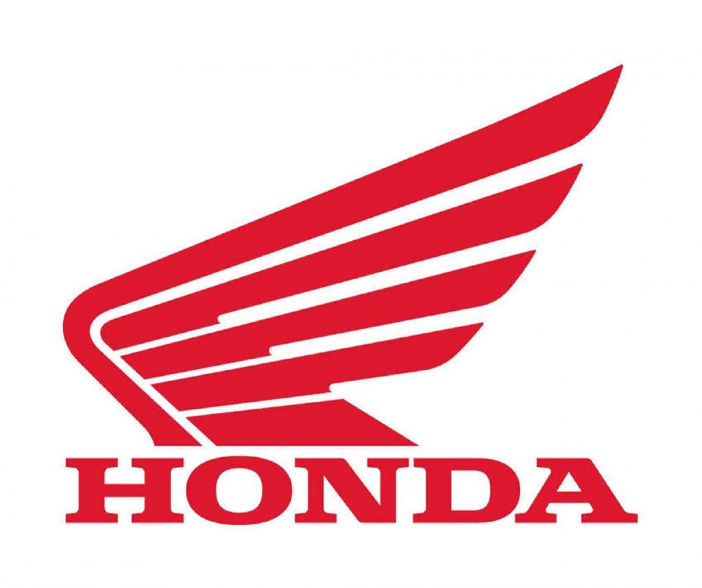

.
Honda Motorcycle & Scooter India Pvt. Ltd. (HMSI), the only Honda in Indian 2Wheeler industry is the 100% subsidiary of Honda Motor Company Ltd., Japan, started its Indian operations at Manesar (District Gurgaon, Haryana) in May 2001. Despite being one of the youngest players in the Indian two-wheelers market, Honda’s consistency of providing high quality products and services has won the hearts of over 48 million happy Indian customers and catapulted HMSI to become India’s 2nd largest two-wheeler company today.